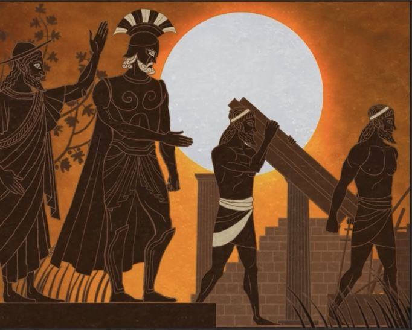

Греческие Тёмные века (XI—IX вв. до н.э.): Забытая эпоха между бронзой и железом.
После катастрофического падения микенских дворцов около 1100 года до н.э. греческий мир погрузился в период глубокого упадка, который современные историки называют Тёмными веками. Это была эпоха культурного регресса, когда на три столетия исчезли монументальная архитектура, письменность (линейное письмо Б) и сложные формы государственности. Однако именно в этих "тёмных" веках вызревали семена будущего греческого феномена — гомеровского эпоса, полисной системы и классической культуры.
Тёмные века, Гомеровская эпоха, Предполисный период — период в истории Древней Греции, охватывающий XI—IX века до н. э., который начался после заката микенской цивилизации и предполагаемого дорийского вторжения и закончился с началом расцвета греческих полисов, называемым архаическим периодом.
Катастрофа бронзового века: предпосылки кризиса.
Системный коллапс конца II тысячелетия до н.э. затронул весь Восточное Средиземноморье. Для Греции он имел особые последствия:
• Разрушение дворцовых центров (Микены, Тиринф, Пилос) с явными следами пожаров
• Массовое запустение поселений — по археологическим данным, 90% населённых пунктов были заброшены
• Исчезновение бюрократической системы — глиняные таблички больше не составлялись
• Прекращение дальних торговых связей — в слоях этого периода почти нет импортных товаров
Причины катастрофы остаются дискуссионными:
1. Вторжение дорийцев — племён с севера, носителей протогреческого диалекта
2. "Народы моря" — загадочные захватчики, упомянутые в египетских источниках
3. Системный кризис — перенаселение, истощение почв, социальные конфликты
4. Климатические изменения — данные дендрохронологии указывают на многолетнюю засуху
Материальная культура: простота и прагматизм.
• Археологические находки Тёмных веков демонстрируют резкое упрощение:
• Керамика — исчезли сложные дворцовые стили, появилась протогеометрическая керамика (X в. до н.э.) с простыми кругами и линиями
• Металлургия — переход от бронзы к железу; первые железные мечи появляются около 1050 г. до н.э.
• Погребения — преобладают индивидуальные захоронения вместо микенских толосов; в Афинах появляется обычай кремации
• Архитектура — небольшие дома типа "апсидальных мегаронов" (овальные в плане)
Любопытно, что именно в этот период формируется ключевой элемент греческой культуры — мегарон как архитектурный прообраз будущих храмов.
Социальная структура: рождение гомеровского общества.
Отсутствие письменных источников компенсируется данными археологии и позднейшими текстами:
• Басилеи — вожди племён, сочетавшие военные и религиозные функции (прообраз будущих царей)
• Гетерии — мужские союзы воинов, описанные в "Илиаде"
• Ойкосы — большие патриархальные семьи как основная хозяйственная единица
• Рабство — преимущественно патриархальное, военнопленные
В этот период происходит важнейший переход — от дворцовой экономики бронзового века к частной собственности на землю.
Религия: трансформация культов
Хотя многие микенские боги сохранились (Зевс, Гера, Посейдон), религиозная практика изменилась:
• Исчезли дворцовые святилища
• Появились сельские культовые места у источников и на вершинах холмов
• Возник культ героев — почитание могил легендарных воинов
• Развивался огненный ритуал кремации (особенно у дорийцев)
Интересно, что именно в Тёмные века формируется пантеон олимпийских богов в знакомой нам классической форме.
Конец эпохи: зарождение новой Греции
К IX веку до н.э. появляются признаки возрождения:
• Возникновение протогородов (Левканди на Эвбее с "герооном" — героическим погребением)
• Финикийское влияние — появление первых предметов восточного импорта
• Изобретение алфавита — около 800 г. до н.э. греки адаптируют финикийское письмо
• Колонизация — первые попытки морской экспансии (Аль-Мины в Сирии)
Историческое значение.
Парадоксально, но именно в Тёмные века:
✔ Сформировался эпический цикл (устная традиция, позже записанная в "Илиаде")
✔ Оформились диалектные группы греческого языка
✔ Появились социальные институты будущих полисов
✔ Сложился культурный синтез микенских, дорийских и восточных элементов
Как отмечал британский археолог Энтони Снодграсс, "без этого периода "темноты" не было бы и греческого чуда". Именно контраст между убогостью материальной культуры и богатством формирующейся устной традиции сделал возможным уникальный расцвет архаической Греции.